01 / Interactive installation
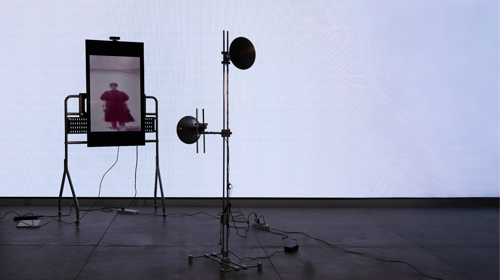
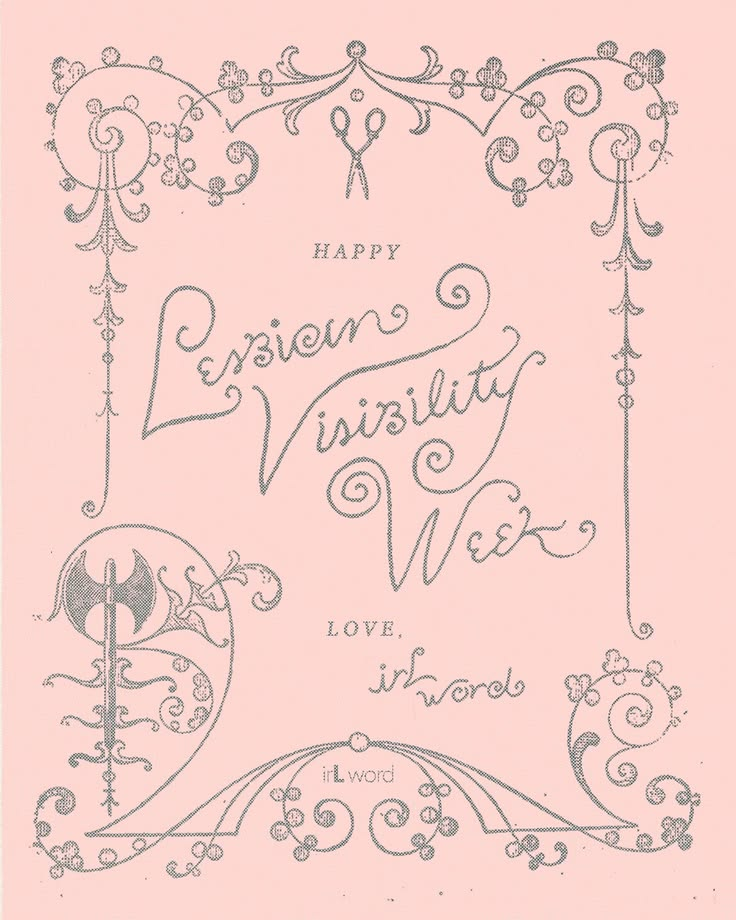
I am an artist born in China in 2004. I studied at Nanchang University and spent an exchange period at Hanyang University in South Korea. I am currently studying Contemporary Art Practice at the Royal College of Art in the UK.
I work across installation, sound, moving image and interactive games. My current research asks how voice shapes social life online. In voice notes and live audio spaces, a pause, a change in tone or a sound in the background can make someone feel present. I am interested in what happens to that sense of presence when a voice can be replayed, synthesised or answered automatically.
In MEET IN:BUBBLE, speaking triggers a cluster of short-lived bubbles. The installation gives the interval between speaking and receiving a response a visible form.
DESIRE:burning examines how the idol industry shapes desire. AS OBJECT looks at how everyday objects hold emotion and offer comfort. In EMPTY VEIN, an interactive game set in a landscape inspired by the former coal mines of my hometown, I ask how an industrial place is remembered after the work that shaped it disappears.

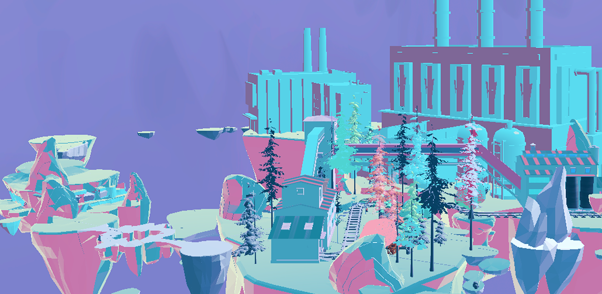
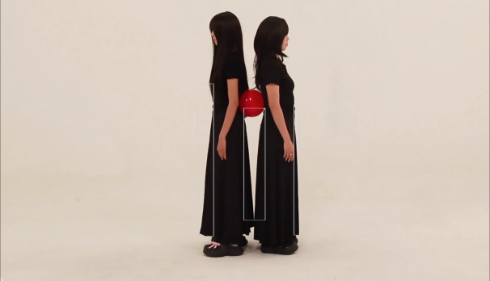
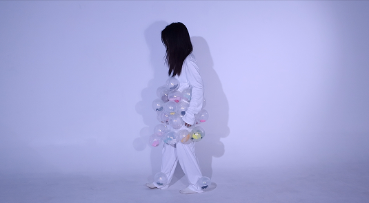
What makes a voice feel close when its speaker is absent?
I looked at AI conversations, virtual companions and romance simulation games, where voice and response can create a feeling of intimacy. The project asks what happens when that feeling depends on a system designed to respond.
I chose bubbles because they appear briefly and disappear. I tested a voice-triggered bubble machine, using the delay between speaking and seeing a bubble to give the act of waiting a physical form.
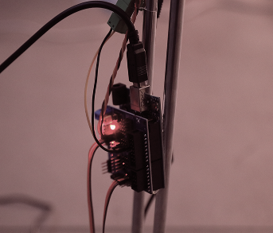
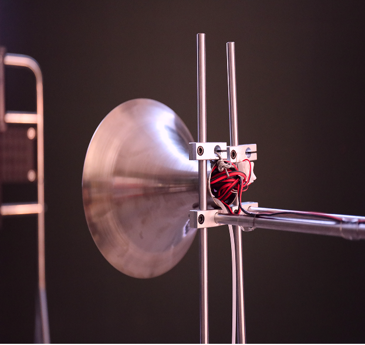
The visitor speaks, the system detects the sound, and the bubble machine responds. The bubbles make the response visible for a moment before it disappears.
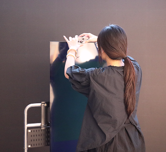
I began with the former coal mines of my hometown. Its industrial sites hold traces of the labour that once sustained the area, even as their original purpose has disappeared.
I translated that setting into a navigable game environment. Colour, industrial forms and spatial layout turn the site into a place the player encounters through movement.
The game uses exploration to ask how a place can still be remembered after the industry that shaped it has gone.
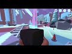
I looked at how the idol industry creates attachment and how fans invest emotion in an image that is carefully staged.
A red balloon became the point of contact between two performers. Its fragility gives their push and pull a physical form.
Performance, installation and moving image come together around that fragile object. A scarlet curtain frames the work as a stage for desire.
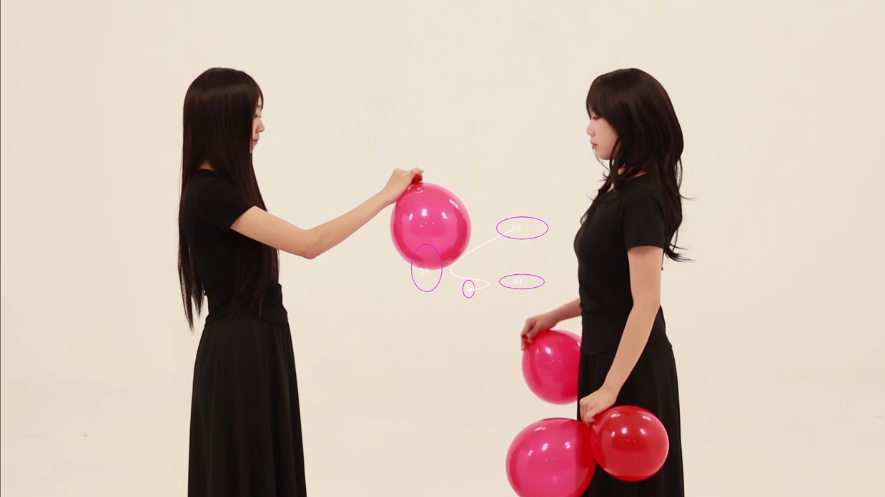
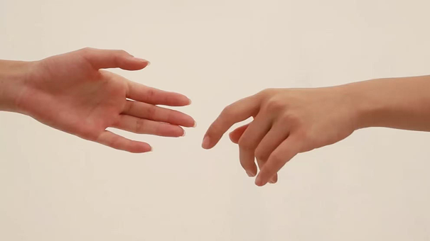
I began with transitional objects and the comfort people seek in ordinary things. The project asks what happens when an object begins to carry part of a person’s emotional life.
The film follows changes in the relationship between a person and the things they rely on, using encounters with familiar objects to show how comfort can become dependence.
The moving image brings those shifts together, following how the meaning of an object changes as the relationship with it deepens.
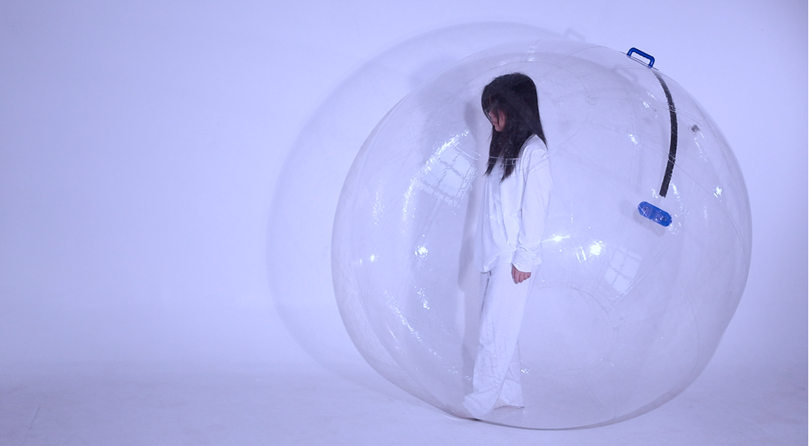
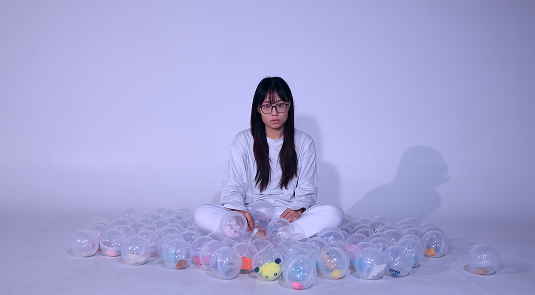